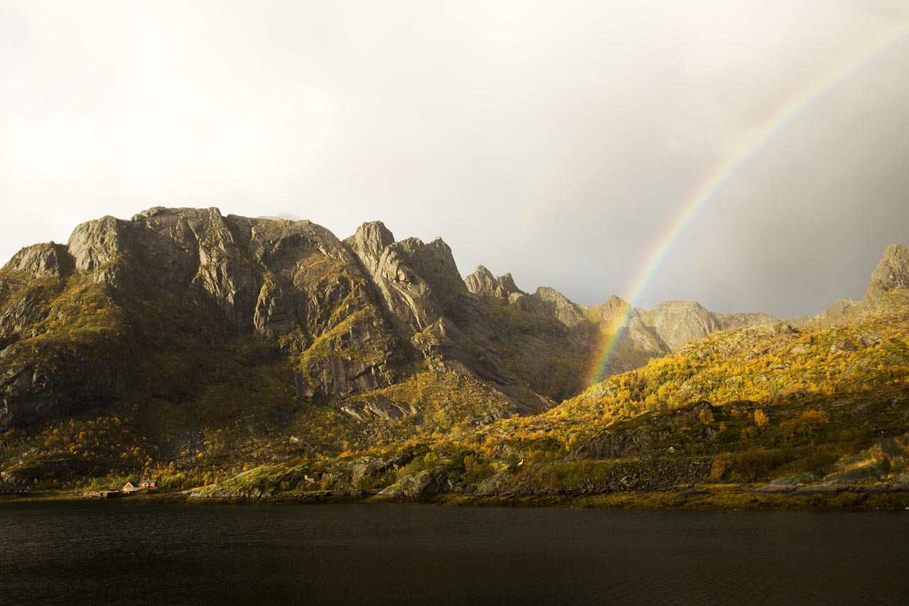

Part One: Why Lofoten?
Most surfers, when you describe where you're heading, picture something warm: Indo barrels, a reef in the Canaries, maybe Morocco on a budget. When you say "Norway, above the Arctic Circle, in November," they look at you the way people look at a car that has just driven slowly into a lake. And yet the Lofoten Islands have produced some of the most photogenic, most consistently hollow surf in the North Atlantic — and for years, a small community of Norwegian surfers have had it almost entirely to themselves.
The reason is simple and uncomfortable: the water temperature. In November, the Norwegian Sea sits between 6 and 9 degrees Celsius. Even in the relative warmth of early autumn, it rarely exceeds 12°C. Cold shock — the involuntary gasping reflex that drowns people who fall into cold water unprepared — sets in within seconds of immersion. It is not a figure of speech. It is a physiological event that overrides voluntary muscle control. The surfers who session Lofoten without the right rubber are not brave. They are uninformed about the mechanism that will kill them. That is a meaningful distinction, and it shapes everything about how you prepare for a trip here.
What drew me north was a photograph taken at Unstad beach — a perfectly A-framed left-hander breaking in front of a sheer mountain wall, the surfer tiny against the granite, snow dusting the summits above the whitewash. The image has done more for Arctic surfing tourism than any article ever written. It is entirely honest: the waves look exactly like that, the mountains are exactly that close, and the cold is exactly as implied by the grey-green water in the frame. You should go knowing all three of those things are real.
Part Two: The Swell, the Break, the Season
Lofoten's surf is driven by North Atlantic low-pressure systems tracking northeast across open ocean. The fetch is enormous — thousands of kilometres of open water between Iceland, the Faroe Islands, and the Norwegian coast — which means when a swell arrives, it arrives organised. Clean lines, consistent period, predictable direction. The archipelago's west-facing coastline catches the dominant swell window directly, and the offshore topography funnels and focuses energy into the bays between the headlands.
The flagship break is Unstad, in the Vestvågøy municipality: a sheltered bay flanked by the kind of mountains that make every other surf spot feel geographically modest. The break works on both sides of the bay, offering a right and a left depending on swell angle. At head-high to overhead, both are exceptional — fast, clean, with enough wall to work and enough power to require commitment. At double overhead and above, the left in particular becomes serious: it throws harder and closes out in sections if you misread the peak. Local knowledge about where to sit in the lineup is not optional at that size.
Beyond Unstad, the Lofoten coast offers a dozen lesser-known breaks spread across the outer islands. Eggum, twenty minutes north of Unstad, produces a long, workable right-hander over a mixed sand-and-reef bottom that handles bigger swells better than Unstad and attracts a fraction of the crowds. Flakstad, further south toward Moskenesøya, has two breaks within a few kilometres of each other that produce quality surf on a more northerly swell direction when the main window is too direct for Unstad to handle cleanly. The islands reward exploration and punish laziness about checking conditions before driving.
"The ocean here doesn't care that you drove fourteen hours to get here. It has its own schedule, and patience is the only strategy that works."
Season matters enormously. The prime window for Arctic surf tourism falls between September and March, when the North Atlantic storm track is most active and swell frequency is highest. October and November offer the best balance: surf is consistent, daylight is reduced but not yet at its December minimum, and the water temperature — while cold enough to demand serious neoprene — has not yet dropped to its February low of around 4°C. Spring sessions from February to April are possible but demand the most from your rubber and your cold tolerance. Summer is largely flat, with the compensation of the midnight sun and warmer water — but if you're coming for waves, summer is not your season.
Part Three: Cold Water — What It Actually Demands
The difference between a 3mm wetsuit and a 6/5mm hooded suit in 7°C water is not the difference between comfortable and cold. It is the difference between functional and incapacitated. I want to be precise about this because the cold-water surfing community has developed a certain mythology around tolerance — the idea that toughening up is sufficient preparation. It isn't. Cold shock is not modulated by toughness. You cannot willpower your way through the involuntary gasping reflex that precedes the swimming failure that precedes drowning. What you can do is wear the right equipment so that cold shock never happens in the first place.
At 7°C, the minimum viable suit for a session of any real duration is a 6/5mm hooded wetsuit with sealed seams and a chest zip or back zip that doesn't flush. Gloves at 5mm minimum — thicker costs you sensitivity but below 5mm you will lose dexterity within ten to fifteen minutes. Boots at 5–6mm with a hard sole for rock scrambles to and from the water. The hood should be integrated with the suit, not a separate pull-on; the junction between a separate hood and a suit collar is where cold water enters first and most reliably. If you are surfing Lofoten in November with a separate hood, you will feel the flush on your first duck-dive and spend the rest of the session managing the headache it produces.
Pre-session and post-session protocol is as important as the equipment itself. Before entering the water: change in a sheltered spot, ideally your car with a changing mat across the boot. Pre-fill your suit with warm water from a thermos or camping kettle — not hot, but body-temperature warm — poured down the neck seal before you zip up. This eliminates the initial thermal shock of a dry suit meeting cold water and extends your comfortable session time by fifteen to twenty minutes. After exiting: get out of the suit immediately, not gradually. Prolonged exposure to wind in a wet suit after a session drops your core temperature faster than the water itself. Have a dry changing robe or insulated towel ready. Have a thermos of hot liquid in the car. Have dry clothes laid out in the order you'll put them on. These are not luxuries. They are the reason you can surf again tomorrow.

The Breaks in Detail: Where to Surf Lofoten
Unstad is the centre of gravity for Lofoten surfing, and the Unstad Arctic Surf camp has done more than any other single organisation to make the archipelago accessible to visiting surfers. The camp offers board rental, wetsuit rental (make sure the rental suits are 6/5mm or better — inspect the seams before you take them), warm showers, and local conditions knowledge that is genuinely hard to replicate from a weather app. The beach itself is a short paddle from the car park to the lineup; the mountains behind it create a wind shadow that keeps the surface cleaner than many more exposed breaks, even in onshore conditions.
Eggum offers a different character: less sheltered, more exposed to northwesterly wind, but with a longer wave and a more forgiving takeoff section that suits intermediate surfers well. The walk from the road to the beach is ten minutes across open headland — in November, in wind, in full neoprene, carrying a board, this is not nothing. But the break rewards the effort with space in the lineup and a wave that allows for more extended rides than Unstad's punchier, faster faces.
For experienced surfers chasing the archipelago's most powerful surf, the outer reefs north of Vestvågøy produce exceptional quality on large northwest swells — but accessing them requires either a local contact with a boat or the kind of local knowledge that only comes from spending serious time in the area. Do not attempt to access offshore breaks without current local knowledge of the reef layout and the tidal movement through the sounds. The Lofoten tidal streams are significant — up to 3–4 knots through the narrows — and a surfer who underestimates a tidal race in 7°C water is in a situation that has no good outcomes.
The Midnight Sun and the Polar Dark: Timing Your Session
Surfing Lofoten in summer means surfing in perpetual light — the sun dips toward the horizon around midnight, turns the water a flat copper-gold, and begins climbing again before 3 a.m. Sessions at 11 p.m. are possible and strange and beautiful: the light is horizontal, the shadows are long, the mountains cast reflections across the bay that shift with the swell. There are almost no other surfers. The water is the warmest it will be all year. The waves are inconsistent — summer is the weak part of the swell calendar — but when a late-summer storm generates something rideable under the midnight sun, it is one of the more genuinely unusual experiences surfing has to offer.
In November, the calculation reverses. Sunrise is after 9 a.m., sunset is before 3 p.m. You have perhaps five hours of usable light. This concentrates sessions and creates the Lofoten surf tourism paradox: the best waves arrive in the worst light, and the window for surfing them in any visibility is narrow enough that every swell day matters. Wasting the morning because you didn't check the forecast the night before is a real cost in November. Build the habit of checking the Yr.no forecast and the Windguru swell models before you sleep — both are standard references among local surfers — and wake up knowing what the day is going to give you before the alarm goes off.
"The mountains here make every other surf spot feel geographically modest. You paddle out under granite walls that took ten thousand years to form. It does something to your sense of scale that no other break replicates."
— Morgan L.

Getting There and Getting Around
The practical logistics of a Lofoten surf trip are more straightforward than the remoteness suggests. Fly into Bodø on the Norwegian mainland — regular connections from Oslo, Bergen, and Trondheim — then take the Hurtigruten ferry or the E10 road via the bridges and tunnels that connect the island chain. Driving the E10 from the ferry at Skutvik takes about two hours to reach Svolvær and another ninety minutes to reach Vestvågøy and the Unstad area. Car hire from Bodø or Svolvær is the standard approach; the alternative of arriving by public bus is possible but makes reaching the more dispersed breaks significantly harder.
Board transport is worth planning carefully. Norwegian domestic flights permit surfboards as sports equipment checked baggage, with fees that vary by airline and are not trivial. Many visiting surfers rent boards from the Unstad Arctic Surf camp for precisely this reason — the rental stock is maintained for cold-water conditions, the fins are configured for the break, and the boards are thicker and more buoyant than the equipment most regular-season surfers own, which is appropriate for the wetsuit bulk and the cold-water paddling conditions. If you bring your own board, a 6'6" to 7'6" mid-range with more volume than you'd ride at home is the right tool for the conditions.
What We Carried
- 6/5mm hooded wetsuit — integrated hood, sealed seams, chest zip; Patagonia R5 or O'Neill Psycho Tech are the current benchmarks for this temperature range
- 5mm gloves — Patagonia R3 or similar; erring toward thicker is the right call for sessions over 90 minutes
- 5mm split-toe boots with hard sole — for the rock scrambles at Eggum and the outer breaks
- Changing mat and dry robe — non-negotiable for dignity and warmth post-session in any wind
- 2L thermos of hot water — for pre-filling the suit before entry; a second thermos of hot tea or broth for after
- 7'0" single-fin with thruster option — more volume than home quiver, configured for longer-period swell
- Full set of spare fins and fin key — fin boxes flex in cold water and over-torqued screws strip easily
- Board sock and nose guard — for the overhead journey through Bodø airport and the E10 road vibrations
- Yr.no and Windguru saved in browser favourites — local forecast cross-referenced nightly
- First-aid kit rated for remote coastal conditions including SAM splint, Israeli bandage, and emergency foil blanket